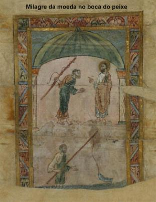
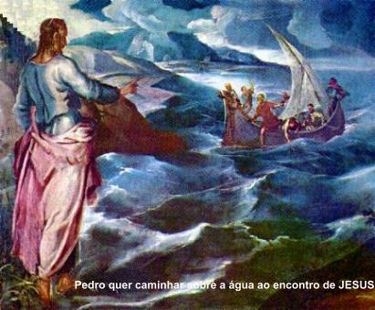
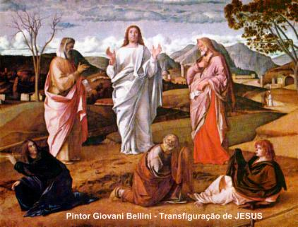
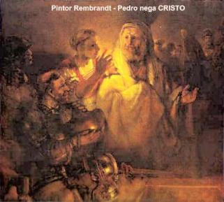
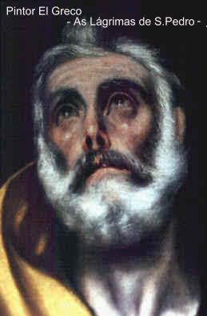
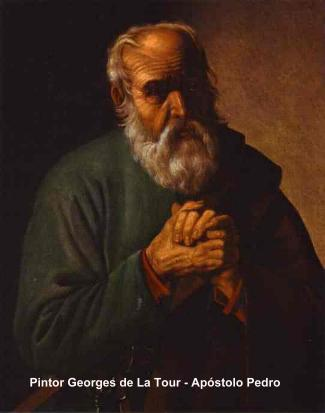
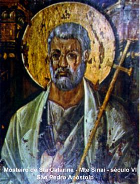
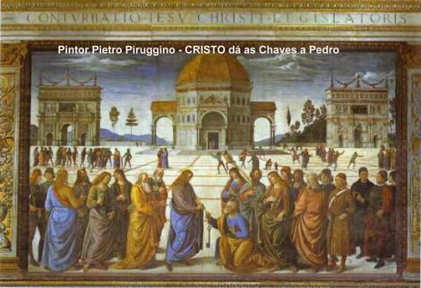

PAGAMENTO DO TRIBUTO
Na sequência dos dias, JESUS fez de Cafarnaum
a sua cidade sede e de onde 
“O vosso Mestre não paga a didracma?” (era o valor do imposto e correspondia a uma moeda com 7 gramas de prata, valia o equivalente a meio siclo, ou seja, a metade do valor da moeda israelita) Pedro respondeu que pagava sim e chegando em casa, JESUS perguntou-lhe:
“Que te parece, Simão? De quem recebem os reis da terra tributos e impostos? Dos seus filhos (isto é, de seus súditos) ou dos estranhos?”
Como ele respondeu: “Dos estranhos”, JESUS lhe disse:
“Logo, os filhos estão isentos. Mas, para que não os escandalizemos, vai ao mar e joga o anzol. O primeiro peixe que subir, segura-o e abre-lhe a boca. Acharás aí um estáter. (é a tetradracma de Tiro, que correspondia ao valor do siclo inteiro israelita e pesava 14,40 gramas de prata) Pega-o e entrega-o a eles por MIM e por ti.” (Mt 17,25-27)
A BARCA DE PEDRO

Isto nos permite estabelecer uma simbologia e dizer, que fora da Barca de Pedro não se encontra JESUS, ou melhor, ELE sempre será encontrado na Barca de Pedro. Por outro lado, como na evangelização eclesial, a Barca é colocada simbolicamente representando a Igreja, podemos completar dizendo: que a Igreja é a Barca, que teve em Simão Pedro o seu primeiro timoneiro, ou seja, o seu primeiro Chefe e onde se encontra JESUS.
ENSINAMENTO DIVINO

Embora CRISTO por suas palavras, tenha
colocado Pedro num plano preferencial desde o início, faz-se mister distinguir
que JESUS não “nomeou” o seu Discípulo para uma atividade imediata ou para o cargo de Chefe
em exercício, porque ELE estava presente e atuante no cumprimento de sua Divina
Missão. Não faria o menor sentido, o SENHOR autorizar Pedro ser o guia das almas
que buscavam a salvação, estando ELE presente e ao lado dos Discípulos. Por outro
lado, o fato dos Apóstolos ambicionarem alcançar o primeiro lugar entre eles, ou quem
seria o maior no reino de DEUS, é porque não entendiam a Obra do SENHOR e não
conseguiam compreender os ensinamentos de JESUS. Numa passagem evangélica
descrita por São Mateus, Maria Salomé esposa de Zebedeu, mãe de João
Evangelista e Tiago Maior, suplica um lugar para os seus filhos, um à direita e
o outro à esquerda de JESUS, no Reino de 
“Sabeis que os governadores das nações as dominam e os grandes as tiranizam. Entre vós não deverá ser assim. Ao contrário, aquele que quiser tornar-se grande entre vós seja aquele que serve, e o que quiser ser o primeiro dentre vós, seja o vosso servo.” (Mt 20,24-27)
Em outra oportunidade, ELE falou:
“Se alguém quiser ser o primeiro, seja o último e aquele que serve a todos". Tomou uma criança, colocou-a no meio deles e, pegando-a nos braços, disse-lhes:Aquele que receber uma destas crianças por causa do Meu Nome, a MIM recebe; e aquele que ME recebe, não é a MIM que recebe, mas sim Àquele que ME enviou.”(Mc 9,35-37)
ELE colocava no coração dos Discípulos uma nova forma de exercer a autoridade, sem oferecer margem as atividades do maligno, que fomenta a disputa, o orgulho e a vaidade. E fez isto sem tirar o direito de quem verdadeiramente tem, daquele que é o Chefe, colocando de modo perfeito a necessidade de todos, sem exceções, cultivarem a humildade, a simplicidade e a fraternidade, como providências insubstituíveis para se viver bem e em harmonia com a vida, como tantas e tantas vezes ELE Mesmo procedeu, dando o seu exemplo.
Todavia, o SENHOR decidiu fazer a
sua escolha, ao longo da Vida Pública, ELE revelou uma visível preferência por
Simão Pedro: Mandou que ele andasse sobre as águas (Mt 14,29-30); levou-o
para testemunhar a ressurreição da filha de Jairo (Lc 8,51-55); levou-o para
presenciar a Sua Transfiguração no Monte Tabor (Mt 17,1-8); e muitas outras
passagens. JESUS sabia que os Discípulos eram pessoas simples e em particular,
Simão Pedro era um homem rude e de personalidade muito difícil, em face da
sua pouca instrução. Era aquele diamante bruto que precisava ser lapidado
vagarosamente, a fim de permitir a passagem da “Luz Divina” e tornar-se
o reflexo do SENHOR. 
DURANTE A VIDA PÚBLICA DE JESUS
Certo dia próximo à celebração da Páscoa Judaica, na Sinagoga em Cafarnaum, JESUS acompanhado de Pedro e dos demais Apóstolos, fez uma grande revelação. Os judeus perguntaram-LHE:
“Que faremos, para trabalhar nas Obras de DEUS?” (Jo 6,28)
Respondeu-lhes:
“A Obra de DEUS é que acrediteis Naquele que ELE enviou.” (Jo 6,29)
Então eles disseram:
“Que sinal realizas, para que vejamos e creiamos em TI? Que Obra faz? Nossos pais comeram o maná no deserto, como está escrito: (Moisés) Deu-lhes pão do céu a comer (Jo 6,30-3l)
Respondeu-lhes JESUS:
“Em verdade, em verdade, vos digo: não foi Moisés quem vos deu o pão do Céu, mas é meu PAI quem vos dá o verdadeiro Pão do Céu; porque o Pão de DEUS é o pão que desce do Céu e dá vida ao mundo.” (Jo 6,32-33)
Eles pediram:
“SENHOR, dá-nos sempre deste pão!”(Jo 6,34)
JESUS falou:
“EU sou o Pão da Vida
(ELE se designa como o verdadeiro Pão, 
Os judeus ficaram murmurando contra ELE e diziam:
“Este não é JESUS, o filho de José, cujo pai e mãe conhecemos? Como diz agora: EU desci do Céu"!” (Jo 6,42)
JESUS lhes respondeu:
“Vossos pais comeram o maná no deserto e morreram. Este Pão (ELE) é o que desce do Céu para que, não pereça quem DELE comer. EU sou o Pão Vivo descido do Céu. Quem comer deste Pão viverá eternamente. O Pão que EU darei é a Minha Carne (que é dada) para a vida do mundo.” (Jo 6,49-51)
Os judeus altercavam entre si, dizendo:
“Como este homem pode dar-nos a sua Carne a comer?” (Jo 6,52)
Então JESUS falou:
“Em verdade, em verdade, vos digo:
se não comerdes a Carne do Filho do 
Além dos Apóstolos, estavam também presentes diversos Discípulos. Alguns deles ouvindo aquelas palavras, disseram:
“Esta palavra é dura! Quem pode escutá-la?” (Jo 6,60)
E a partir daquele momento, muitos Discípulos voltaram atrás e não quiseram mais seguir com ELE, porque sentiram repugnância em ouvi-LO dizer que sua Carne era comida e o seu Sangue uma bebida, quando a própria lei judaica condenava o consumo de sangue. Entretanto, ELE sabia que forte impacto iam causar as suas Palavras, da mesma forma que também esperava uma vigorosa reação por parte daqueles que não acreditavam inteiramente NELE. Todavia, os que permaneceram, aceitaram as suas Palavras, mesmo sem entende-las. E tanto é assim, que ELE perguntou a Simão Pedro, porque ele também não partia com os outros. Pedro respondeu-LHE:
“SENHOR, a quem iremos? Tens Palavras de vida eterna e nós cremos e reconhecemos que é o Santo de DEUS." (TU és o CRISTO, o Messias, o FILHO DE DEUS) (Jo 6,68)
Nesta oportunidade como em outras, Pedro confessou a sua fé e demonstrou a sua lealdade, assim como a sua total confiança no SENHOR.
A GRANDE PROMESSA
Realçando a evidente preferência que o SENHOR manifestava por Simão Pedro, encontramos no Evangelho escrito por São João, a passagem da Grande Promessa Divina, na qual o SENHOR se manifesta solenemente confirmando a autoridade que ELE concedeu a Pedro. JESUS perguntou aos Discípulos:
“Quem dizem os homens ser
o Filho do Homem?”
Disseram: "Uns afirmam que é João
Batista, outros dizem que é Elias, e outros, ainda, que é Jeremias ou um dos profetas.”
Então lhes perguntou: “E vós,
quem dizeis que EU sou?”
Simão Pedro respondendo, disse: “Tu és o Messias, o FILHO DE DEUS Vivo.” (Uma
bela e comovedora confissão da messianidade do SENHOR)
JESUS respondeu-lhe: “Bem-aventurado
és tu, Simão, filho de Jonas, porque não foi carne ou sangue
(referindo-se ao caráter limitado da natureza humana) que te revelaram isto, e sim o Meu PAI que está no Céu. Também EU te
digo que tu és Pedro, e sobre esta pedra edificarei Minha Igreja, e as portas do
Inferno nunca prevalecerão contra ela. EU te darei as chaves do Reino dos Céus
e o que ligares na Terra será ligado nos Céus, e o que desligares na Terra será
desligado nos Céus.” (só entram os que são dignos)
(Mt 16,13-19)
Pedro recebeu do SENHOR, as “Chaves” de comando. A
“entrega das chaves” é 
Então, foi um poder singular que JESUS concedeu a Pedro e que a Igreja entendeu como sendo um poder infalível (enquanto lidando com as coisas sagradas). Este assunto foi abordado e estudado exaustivamente pelos Padres e Bispos Conciliares, durante o Concílio Vaticano I (1869-1870), dando origem ao Dogma da Infalibilidade Papal (para todos os assuntos da religião Católica Apostólica Romana).
E por fim, JESUS querendo dar maior configuração a autoridade do Chefe do Colégio Apostólico, após a sua Ressurreição, nas margens do Mar de Tiberíades, disse a Simão Pedro:
“Simão , filho de João, tu Me
amas mais do que estes"
Ele respondeu: “Sim, SENHOR,
Tu sabes que Te amo.”
JESUS lhe disse: “Apascenta
os Meus cordeiros.”
Uma segunda vez lhe disse: “Simão,
filho de João, tu Me amas?”
Disse ele: “Sim, SENHOR, Tu sabes
que Te amo.”
Disse-lhe JESUS: “Apascenta as
Minhas ovelhas.”
Pela terceira vez JESUS perguntou: “Simão,
filho de João, tu Me amas?”
Pedro se entristeceu porque pela terceira vez ELE lhe perguntara: “Tu Me amas?” e lhe disse: “SENHOR, Tu sabes tudo; Tu sabes que Te amo.”
JESUS lhe disse: “Apascenta minhas
ovelhas.” (Jo 21,15-17)
À tríplice confissão de amor de Pedro, JESUS respondeu outorgando-lhe uma tríplice investidura. ELE confiou a Pedro, o encargo de ser o Pastor Universal e reger o rebanho cristão de leigos e dos consagrados, em seu nome.